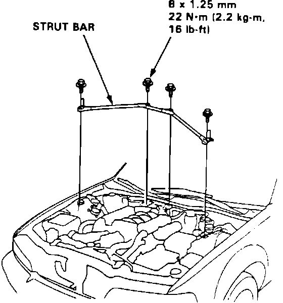
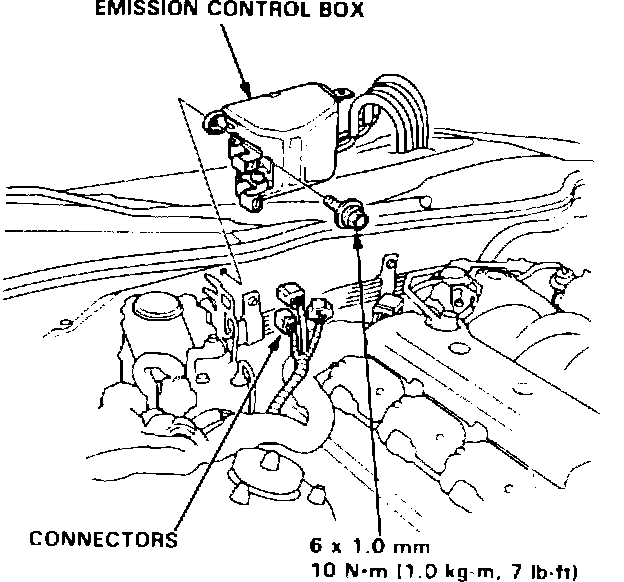
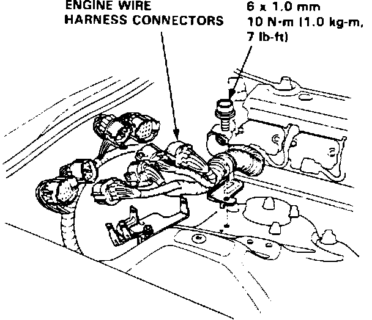
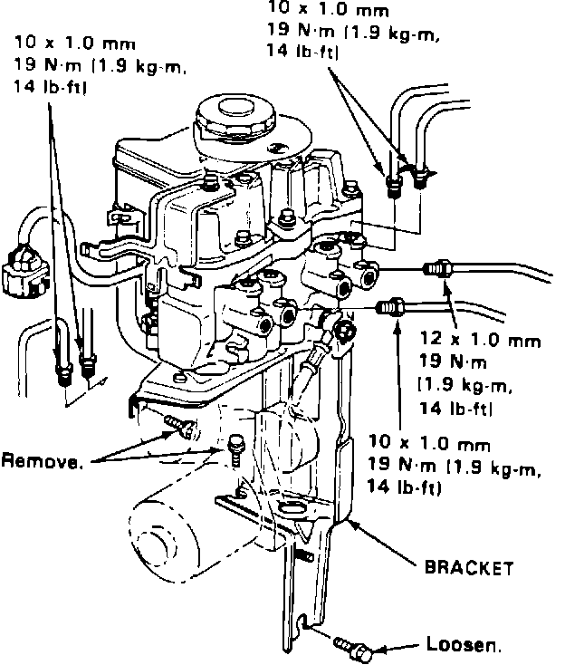

ABS Modulator Unit and Power Unit - Replacement
9213acura01
YEAR
1991
MODEL
LEGEND
VIN APPLICATION
ALL
January 6, 1992
BULLETIN NO.
91-026
ABS Modulator Unit and Power Unit Replacement (Supersedes 91-026, dated May 6, 1991)
The 1991 Legend Service Manuals do not provide a replacement procedure for the ABS modulator, pump, accumulator, or pressure switch. Here is the procedure that was used to determine the flat rate time.
REMOVAL

1. Remove the strut bar.

2. Disconnect the three connectors, then remove the emission control box from the bulkhead. (Do not disconnect the vacuum hoses.)

3. Unbolt the brake line bracket (located under the emission control box) to allow for brake line fitting removal.
4. Disconnect the four engine wire harness connectors and unbolt the harness clamp. Disconnect the three solenoid/pump connectors.
5. Remove the two upper heat shield mounting bolts. Raise the car and loosen, but do not remove, the lower heat shield mounting bolt. (The lower heat shield mounting hole is shaped like a keyhole.)
6. Lower the car and remove the heat shield.
7. Use the Bleeder T-Wrench to relieve the accumulator/line pressure (see the Brakes section of the service manual).
8. Disconnect the six steel brake lines from the modulator. Cap or plug the two lines from the master cylinder to prevent fluid loss.

9. Loosen, but do not remove, the lower modulator bracket mounting bolt. Remove the two upper modulator bracket mounting bolts, then lift the modulator unit, power unit, and bracket out of the car as an assembly.
INSTALLATION
Except for the following steps, installation is the reverse of the removal procedure.
1. When tightening the steel brake lines, have an assistant depress the brake pedal lightly to bleed the lines.
2. Bleed all four calipers with a pressure bleeder (see the Brakes section of the service manual).
3. Remove the ALB 2 fuse from the under-hood fuse/relay box for at least three seconds to clear the ABS control unit's memory.
4. Function test the ABS with the ALB Checker (see the Brakes section of the service manual).
WARRANTY CLAIM INFORMATION
Operation Flat
Number Description Rate
Time
413170 Modulator - Replace. 1.0
413180 Pump - Replace. 1.0
413185 Accumulator - Replace. 1.0
413195 Pressure Switch - Replace. 1.0
420560 ABS Function Test - Check. 0.3
NOTE: Add this time to one of the operations above (only once per repair visit.)
422060 ABS System - Bleed. 0.5
Includes: Relieving accumulator pressure and using the ALB Checker to bleed the system.
NOTE: Use with operations above.
Failed P/N: P/N of defective part
Defect code: Use the Defect Codes (Flat Rate Manual, page 4-5) for the respective operation numbers
Contention code: Use the Customer Contention Codes (Flat Rate Manual, page 9)